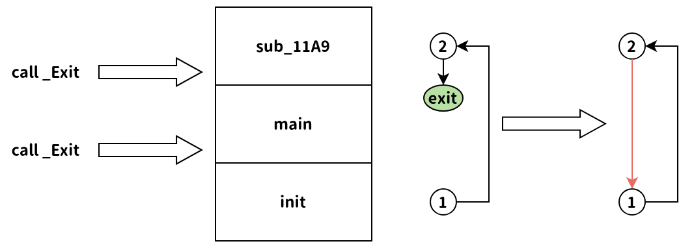
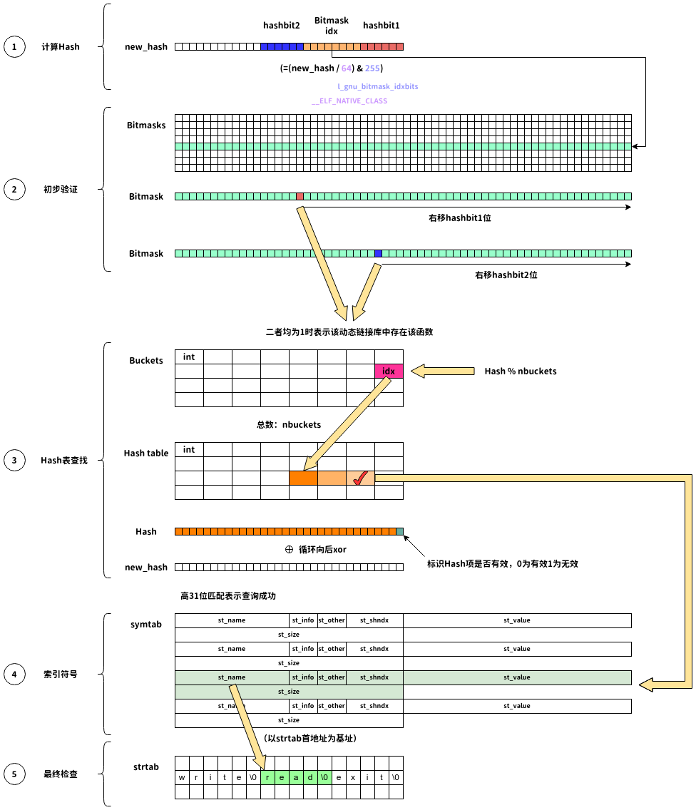

2024年的巅峰极客可以说是强Web组的大福利，除了Web其他类型居然各自只有1道题，令人困惑。在pwn方向只有一道题，但这道题质量比较高，涉及的利用链比较复杂，虽然在现实应用中基本不可能用到，但还是值得学习一番。
幸运的是，在网上找到了讲解此类利用方式的blog，其中使用的示例与本题完全相同：传送门 。下面的分析主要参考上面的blog。
1 2 3 4 5 6 7 8 9 10 11 12 13 14 15 16 17 18 19 20 21 22 23 24 25 26 27 #include <stdio.h> #include <stdlib.h> #include <unistd.h> #include <stddef.h> char * chunk = NULL ;void __attribute__((constructor)) nightmare(){ if (!chunk) chunk = malloc (0x40000 ); uint8_t byte = 0 ; size_t offset = 0 ; read(0 , &offset, sizeof (size_t )); read(0 , &byte, sizeof (uint8_t )); chunk[offset] = byte; write(1 , "BORN TO WRITE WORLD IS A CHUNK 鬼神 LSB Em All 1972 I am mov man 410,757,864,530 CORRUPTED POINTERS" , 101 ); _Exit(0 ); } int main () { _Exit(0 ); }
这是blog中提到的源码（删除了seccomp，原题并无沙箱），与本题的源码除了write的字符串之外其他没有任何不同。__attribute__((constructor))是C语言的一个特性，被该特性所修饰的函数能够在main函数之前执行。在二进制文件中，可以观察到这个函数是通过init调用的。
在nightmare函数的开始，程序分配了一个0x40000的大chunk。对于此类chunk，Glibc通常都是通过调用mmap实现分配的，且第一个分配的此类chunk应正好位于Glibc加载地址的低地址处 。需要注意这个chunk的分配地址特点，这是我们完成利用的前提条件之一。
随后，我们可以输入offset与byte，程序以chunk为基地址，offset为偏移，能够实现一个字节的写入。随后输出一个字符串后调用_Exit退出。
如果我们仅仅是只能写入1个字节，那么复杂的利用无论如何也是无法完成的。因此我们要想办法无限循环nightmare函数。虽然我们在退出之前只能写入1个字节，但这1个字节已经足以让_Exit函数失能了。没错，本题是Partial RELRO，我们可以通过令ld错误解析_Exit函数，将_Exit.got指向其他函数，即可让_Exit调用其他函数而不是退出。（因为写入是以chunk为基地址，考虑ASLR保护，我们无法获取程序的got表的偏移，也就无法直接写入）
需要注意的是，nightmare函数由于是以_Exit结尾的，因此它隐式包含了__noreturn标签，即该函数并非以ret指令结尾，而是以调用_Exit的指令结尾。通过简单的逆向分析可以发现，nightmare函数（题目中为以0x11A9地址开始的函数）的下面就是main函数和init函数。因此当_Exit不退出并执行结束后，程序将会首先去执行main，而main中的_Exit也不会退出程序，因此会继续执行下面的init函数，这样就产生了一个init -> nightmare -> main -> init的无限循环。

因此下面我们需要深入分析got表的解析流程。
ld.so 对 GOT 表的解析流程首先我们都知道，在Partial RELRO的ELF程序中存在.plt节和.got节。在第一次调用某个库函数时，会通过.plt节中的跳转到ld.so中解析函数地址。在本题中，nightmare函数直接调用的是.plt.sec节地址，这个节会跳转到.plt节。本题中.plt节中一共有5个条目，后面4个分别对应于got表中的4个函数，而第1个则是跳转到函数解析流程。
在本题中，对于第一次调用read函数，跳转流程是这样的：
1 2 3 4 read@plt.sec (0x1090) read@plt (0x1040) PLT[0] (0x1020) ld.so
随后，我们跟随调试，结合源码进入ld.so查看。
直接进入的是_dl_runtime_resolve_xsavec，这个函数使用汇编语言编写，位于/sysdeps/x86_64/dl-trampoline.h，如下所示，首先保存一些寄存器状态后传入2个参数，随后调用_dl_fixup。
1 2 3 4 5 6 7 8 9 10 11 12 13 14 15 16 17 18 19 20 21 22 23 24 25 26 27 28 29 30 31 32 33 34 35 36 37 38 39 40 41 42 43 pwndbg> x/10i 0x7ffff7fd8d30 => 0x7ffff7fd8d30 <_dl_runtime_resolve_xsavec>: endbr64 0x7ffff7fd8d34 <_dl_runtime_resolve_xsavec+4>: push rbx 0x7ffff7fd8d35 <_dl_runtime_resolve_xsavec+5>: mov rbx,rsp 0x7ffff7fd8d38 <_dl_runtime_resolve_xsavec+8>: and rsp,0xffffffffffffffc0 0x7ffff7fd8d3c <_dl_runtime_resolve_xsavec+12>: sub rsp,QWORD PTR [rip+0x23f4d] # 0x7ffff7ffcc90 <_rtld_global_ro+432> 0x7ffff7fd8d43 <_dl_runtime_resolve_xsavec+19>: mov QWORD PTR [rsp],rax 0x7ffff7fd8d47 <_dl_runtime_resolve_xsavec+23>: mov QWORD PTR [rsp+0x8],rcx 0x7ffff7fd8d4c <_dl_runtime_resolve_xsavec+28>: mov QWORD PTR [rsp+0x10],rdx 0x7ffff7fd8d51 <_dl_runtime_resolve_xsavec+33>: mov QWORD PTR [rsp+0x18],rsi 0x7ffff7fd8d56 <_dl_runtime_resolve_xsavec+38>: mov QWORD PTR [rsp+0x20],rdi pwndbg> 0x7ffff7fd8d5b <_dl_runtime_resolve_xsavec+43>: mov QWORD PTR [rsp+0x28],r8 0x7ffff7fd8d60 <_dl_runtime_resolve_xsavec+48>: mov QWORD PTR [rsp+0x30],r9 0x7ffff7fd8d65 <_dl_runtime_resolve_xsavec+53>: mov eax,0xee 0x7ffff7fd8d6a <_dl_runtime_resolve_xsavec+58>: xor edx,edx 0x7ffff7fd8d6c <_dl_runtime_resolve_xsavec+60>: mov QWORD PTR [rsp+0x250],rdx 0x7ffff7fd8d74 <_dl_runtime_resolve_xsavec+68>: mov QWORD PTR [rsp+0x258],rdx 0x7ffff7fd8d7c <_dl_runtime_resolve_xsavec+76>: mov QWORD PTR [rsp+0x260],rdx 0x7ffff7fd8d84 <_dl_runtime_resolve_xsavec+84>: mov QWORD PTR [rsp+0x268],rdx 0x7ffff7fd8d8c <_dl_runtime_resolve_xsavec+92>: mov QWORD PTR [rsp+0x270],rdx 0x7ffff7fd8d94 <_dl_runtime_resolve_xsavec+100>: mov QWORD PTR [rsp+0x278],rdx pwndbg> 0x7ffff7fd8d9c <_dl_runtime_resolve_xsavec+108>: xsavec [rsp+0x40] 0x7ffff7fd8da1 <_dl_runtime_resolve_xsavec+113>: mov rsi,QWORD PTR [rbx+0x10] 0x7ffff7fd8da5 <_dl_runtime_resolve_xsavec+117>: mov rdi,QWORD PTR [rbx+0x8] 0x7ffff7fd8da9 <_dl_runtime_resolve_xsavec+121>: call 0x7ffff7fd5e70 <_dl_fixup> 0x7ffff7fd8dae <_dl_runtime_resolve_xsavec+126>: mov r11,rax 0x7ffff7fd8db1 <_dl_runtime_resolve_xsavec+129>: mov eax,0xee 0x7ffff7fd8db6 <_dl_runtime_resolve_xsavec+134>: xor edx,edx 0x7ffff7fd8db8 <_dl_runtime_resolve_xsavec+136>: xrstor [rsp+0x40] 0x7ffff7fd8dbd <_dl_runtime_resolve_xsavec+141>: mov r9,QWORD PTR [rsp+0x30] 0x7ffff7fd8dc2 <_dl_runtime_resolve_xsavec+146>: mov r8,QWORD PTR [rsp+0x28] pwndbg> 0x7ffff7fd8dc7 <_dl_runtime_resolve_xsavec+151>: mov rdi,QWORD PTR [rsp+0x20] 0x7ffff7fd8dcc <_dl_runtime_resolve_xsavec+156>: mov rsi,QWORD PTR [rsp+0x18] 0x7ffff7fd8dd1 <_dl_runtime_resolve_xsavec+161>: mov rdx,QWORD PTR [rsp+0x10] 0x7ffff7fd8dd6 <_dl_runtime_resolve_xsavec+166>: mov rcx,QWORD PTR [rsp+0x8] 0x7ffff7fd8ddb <_dl_runtime_resolve_xsavec+171>: mov rax,QWORD PTR [rsp] 0x7ffff7fd8ddf <_dl_runtime_resolve_xsavec+175>: mov rsp,rbx 0x7ffff7fd8de2 <_dl_runtime_resolve_xsavec+178>: mov rbx,QWORD PTR [rsp] 0x7ffff7fd8de6 <_dl_runtime_resolve_xsavec+182>: add rsp,0x18 0x7ffff7fd8dea <_dl_runtime_resolve_xsavec+186>: jmp r11
_dl_fixup的第一个参数是struct link_map*：
1 2 3 4 5 6 7 8 9 10 11 12 13 14 15 16 17 18 19 struct link_map { ElfW(Addr) l_addr; char *l_name; ElfW(Dyn) *l_ld; struct link_map *l_next , *l_prev ; };
这是一个链表结构，保存有ELF文件需要加载的所有动态链接库信息。链表的第一个元素保存ELF文件的加载地址，name为空。其后依次为各个动态链接库的加载地址与名字。因为要查找一个函数的地址，首先我们不知道它属于哪个动态链接库，因此需要遍历处理。需要注意的是，有两个link_map结构，上面那个是简化版，还有一个非常复杂的位于/include/link.h。
下面是某次执行时的link_map结构：
1 2 3 4 5 6 7 8 9 10 11 12 13 14 15 16 17 18 19 20 21 22 23 pwndbg> tele 0x7ffff7ffe2e0 00:0000│ rdi 0x7ffff7ffe2e0 —▸ 0x555555554000 ◂— 0x10102464c457f 01:0008│ 0x7ffff7ffe2e8 —▸ 0x7ffff7ffe888 ◂— 0 02:0010│ 0x7ffff7ffe2f0 —▸ 0x555555557df8 ◂— 1 03:0018│ 0x7ffff7ffe2f8 —▸ 0x7ffff7ffe890 —▸ 0x7ffff7fc1000 ◂— jg 0x7ffff7fc1047 pwndbg> tele 0x7ffff7ffe890 00:0000│ 0x7ffff7ffe890 —▸ 0x7ffff7fc1000 ◂— jg 0x7ffff7fc1047 01:0008│ 0x7ffff7ffe898 —▸ 0x7ffff7fc1371 ◂— insb byte ptr [rdi], dx /* 'linux-vdso.so.1' */ 02:0010│ 0x7ffff7ffe8a0 —▸ 0x7ffff7fc13e0 ◂— 0xe 03:0018│ 0x7ffff7ffe8a8 —▸ 0x7ffff7fbb160 —▸ 0x7ffff7d78000 ◂— 0x3010102464c457f pwndbg> tele 0x7ffff7fbb160 00:0000│ 0x7ffff7fbb160 —▸ 0x7ffff7d78000 ◂— 0x3010102464c457f 01:0008│ 0x7ffff7fbb168 —▸ 0x7ffff7fbb140 ◂— '/lib/x86_64-linux-gnu/libc.so.6' 02:0010│ 0x7ffff7fbb170 —▸ 0x7ffff7f91bc0 (_DYNAMIC) ◂— 1 03:0018│ 0x7ffff7fbb178 —▸ 0x7ffff7ffdaf0 (_rtld_global+2736) —▸ 0x7ffff7fc3000 ◂— 0x3010102464c457f pwndbg> tele 0x7ffff7ffdaf0 00:0000│ 0x7ffff7ffdaf0 (_rtld_global+2736) —▸ 0x7ffff7fc3000 ◂— 0x3010102464c457f 01:0008│ 0x7ffff7ffdaf8 (_rtld_global+2744) —▸ 0x555555554318 ◂— '/lib64/ld-linux-x86-64.so.2' 02:0010│ 0x7ffff7ffdb00 (_rtld_global+2752) —▸ 0x7ffff7ffce80 (_DYNAMIC) ◂— 0xe 03:0018│ 0x7ffff7ffdb08 (_rtld_global+2760) ◂— 0
由上述数据可知，ELF的加载地址应位于0x555555554000，加载了3个动态链接库，依次为linux-vdso.so.1、/lib/x86_64-linux-gnu/libc.so.6、/lib64/ld-linux-x86-64.so.2。第2个参数则是我们要解析的函数位于ELF got表中的地址中的索引值。
_dl_fixup第一段1 2 3 4 5 6 7 8 9 10 11 12 13 14 const ElfW (Sym) *const symtab = (const void *) D_PTR (l, l_info[DT_SYMTAB]); const char *strtab = (const void *) D_PTR (l, l_info[DT_STRTAB]);const PLTREL *const reloc = (const void *) (D_PTR (l, l_info[DT_JMPREL]) + reloc_offset); const ElfW (Sym) *sym = &symtab[ELFW(R_SYM) (reloc->r_info)];const ElfW (Sym) *refsym = sym;void *const rel_addr = (void *)(l->l_addr + reloc->r_offset);lookup_t result;DL_FIXUP_VALUE_TYPE value; assert (ELFW(R_TYPE)(reloc->r_info) == ELF_MACHINE_JMP_SLOT);
这里有一些宏定义需要下面的引用：
1 2 3 4 5 6 7 8 9 10 11 12 13 14 15 16 17 18 19 20 21 22 23 24 25 #define ElfW(type) _ElfW (Elf, __ELF_NATIVE_CLASS, type) #define _ElfW(e,w,t) _ElfW_1 (e, w, _##t) #define _ElfW_1(e,w,t) e##w##t # define D_PTR(map, i) ((map)->i->d_un.d_ptr + (map)->l_addr) #define DT_SYMTAB 6 const ElfW (Sym) *const symtab= (const void *) D_PTR (l, l_info[DT_SYMTAB]); const char *strtab = (const void *) D_PTR (l, l_info[DT_STRTAB]);# define PLTREL ElfW(Rela)
__ELF_NATIVE_CLASS为64，因此第一条语句即为获取ELF的.symtab节地址，即符号表地址。具体的获取方式如下：
在ELF中有.dynamic节，其中保存有本ELF文件多个节的地址信息：
1 2 3 4 5 6 7 8 9 10 11 12 13 14 15 16 17 18 19 20 21 22 23 24 25 26 27 28 29 30 31 32 LOAD:0000000000003DF8 LOAD segment mempage public 'DATA' use64 LOAD:0000000000003DF8 assume cs:LOAD LOAD:0000000000003DF8 ;org 3DF8h LOAD:0000000000003DF8 01 00 00 00 00 00 00 00 01 00+stru_3DF8 Elf64_Dyn <1, 1> ; DATA XREF: LOAD:00000000000001A0↑o LOAD:0000000000003DF8 00 00 00 00 00 00 ; .got.plt:0000000000004000↓o LOAD:0000000000003DF8 ; DT_NEEDED libc.so.6 LOAD:0000000000003E08 0C 00 00 00 00 00 00 00 00 10+Elf64_Dyn <0Ch, 1000h> ; DT_INIT LOAD:0000000000003E18 0D 00 00 00 00 00 00 00 E8 12+Elf64_Dyn <0Dh, 12E8h> ; DT_FINI LOAD:0000000000003E28 19 00 00 00 00 00 00 00 E0 3D+Elf64_Dyn <19h, 3DE0h> ; DT_INIT_ARRAY LOAD:0000000000003E38 1B 00 00 00 00 00 00 00 10 00+Elf64_Dyn <1Bh, 10h> ; DT_INIT_ARRAYSZ LOAD:0000000000003E48 1A 00 00 00 00 00 00 00 F0 3D+Elf64_Dyn <1Ah, 3DF0h> ; DT_FINI_ARRAY LOAD:0000000000003E58 1C 00 00 00 00 00 00 00 08 00+Elf64_Dyn <1Ch, 8> ; DT_FINI_ARRAYSZ LOAD:0000000000003E68 F5 FE FF 6F 00 00 00 00 A0 03+Elf64_Dyn <6FFFFEF5h, 3A0h> ; DT_GNU_HASH LOAD:0000000000003E78 05 00 00 00 00 00 00 00 B8 04+Elf64_Dyn <5, 4B8h> ; DT_STRTAB LOAD:0000000000003E88 06 00 00 00 00 00 00 00 C8 03+dq 6 ; d_tag ; DT_SYMTAB LOAD:0000000000003E88 00 00 00 00 00 00 dq 3C8h ; d_un LOAD:0000000000003E98 0A 00 00 00 00 00 00 00 95 00+Elf64_Dyn <0Ah, 95h> ; DT_STRSZ LOAD:0000000000003EA8 0B 00 00 00 00 00 00 00 18 00+Elf64_Dyn <0Bh, 18h> ; DT_SYMENT LOAD:0000000000003EB8 15 00 00 00 00 00 00 00 00 00+Elf64_Dyn <15h, 0> ; DT_DEBUG LOAD:0000000000003EC8 03 00 00 00 00 00 00 00 00 40+Elf64_Dyn <3, 4000h> ; DT_PLTGOT LOAD:0000000000003ED8 02 00 00 00 00 00 00 00 60 00+Elf64_Dyn <2, 60h> ; DT_PLTRELSZ LOAD:0000000000003EE8 14 00 00 00 00 00 00 00 07 00+Elf64_Dyn <14h, 7> ; DT_PLTREL LOAD:0000000000003EF8 17 00 00 00 00 00 00 00 60 06+Elf64_Dyn <17h, 660h> ; DT_JMPREL LOAD:0000000000003F08 07 00 00 00 00 00 00 00 88 05+Elf64_Dyn <7, 588h> ; DT_RELA LOAD:0000000000003F18 08 00 00 00 00 00 00 00 D8 00+Elf64_Dyn <8, 0D8h> ; DT_RELASZ LOAD:0000000000003F28 09 00 00 00 00 00 00 00 18 00+Elf64_Dyn <9, 18h> ; DT_RELAENT LOAD:0000000000003F38 FB FF FF 6F 00 00 00 00 00 00+Elf64_Dyn <6FFFFFFBh, 8000000h> ; DT_FLAGS_1 LOAD:0000000000003F48 FE FF FF 6F 00 00 00 00 68 05+Elf64_Dyn <6FFFFFFEh, 568h> ; DT_VERNEED LOAD:0000000000003F58 FF FF FF 6F 00 00 00 00 01 00+Elf64_Dyn <6FFFFFFFh, 1> ; DT_VERNEEDNUM LOAD:0000000000003F68 F0 FF FF 6F 00 00 00 00 4E 05+Elf64_Dyn <6FFFFFF0h, 54Eh> ; DT_VERSYM LOAD:0000000000003F78 F9 FF FF 6F 00 00 00 00 04 00+Elf64_Dyn <6FFFFFF9h, 4> ; DT_RELACOUNT LOAD:0000000000003F88 00 00 00 00 00 00 00 00 00 00+Elf64_Dyn <0> ; DT_NULL
如上例所示，dynamic节实际上是由多个二元组构成，二元组的第一个元素为编号，用于标识表示的内容，如这里的5即代表.strtab节，即字符串表节的相对地址、6即代表.symtab节，即符号表的相对地址。所有这些常量定义在/elf/elf.h中。因此前面3条语句实际上是在获取ELF文件的符号表实例、字符串表实例、PLT相对跳转表（.rela.plt节）实例 。
第4行const ElfW(Sym) *sym = &symtab[ELFW(R_SYM) (reloc->r_info)];是要根据.rela.plt中对应函数的r_info字段获取到.symtab符号表中的对应项：
1 2 3 4 5 6 7 8 9 10 11 12 13 LOAD:0000000000000660 ; ELF JMPREL Relocation Table LOAD:0000000000000660 18 40 00 00 00 00 00 00 07 00+dq 4018h ; r_offset ; R_X86_64_JUMP_SLOT write LOAD:0000000000000660 00 00 02 00 00 00 00 00 00 00+dq 200000007h ; r_info LOAD:0000000000000660 00 00 00 00 dq 0 ; r_addend LOAD:0000000000000678 20 40 00 00 00 00 00 00 07 00+dq 4020h ; r_offset ; R_X86_64_JUMP_SLOT read LOAD:0000000000000678 00 00 03 00 00 00 00 00 00 00+dq 300000007h ; r_info LOAD:0000000000000678 00 00 00 00 dq 0 ; r_addend LOAD:0000000000000690 28 40 00 00 00 00 00 00 07 00+dq 4028h ; r_offset ; R_X86_64_JUMP_SLOT malloc LOAD:0000000000000690 00 00 06 00 00 00 00 00 00 00+dq 600000007h ; r_info LOAD:0000000000000690 00 00 00 00 dq 0 ; r_addend LOAD:00000000000006A8 30 40 00 00 00 00 00 00 07 00+dq 4030h ; r_offset ; R_X86_64_JUMP_SLOT _Exit LOAD:00000000000006A8 00 00 08 00 00 00 00 00 00 00+dq 800000007h ; r_info LOAD:00000000000006A8 00 00 00 00 dq 0 ; r_addend
如上例所示，这里是取r_info的高4字节，对于read为3，随后到符号表中查找：
1 2 3 4 5 6 7 8 9 10 LOAD:00000000000003C8 00 00 00 00 00 00 00 00 00 00+Elf64_Sym <0> LOAD:00000000000003E0 50 00 00 00 20 00 00 00 00 00+Elf64_Sym <offset aItmDeregistert - offset unk_4B8, 20h, 0, 0, offset dword_0, 0> ; "_ITM_deregisterTMCloneTable" LOAD:00000000000003F8 3E 00 00 00 12 00 00 00 00 00+Elf64_Sym <offset aWrite - offset unk_4B8, 12h, 0, 0, offset dword_0, 0> ; "write" LOAD:0000000000000410 0B 00 00 00 12 00 00 00 00 00+Elf64_Sym <offset aRead - offset unk_4B8, 12h, 0, 0, offset dword_0, 0> ; "read" LOAD:0000000000000428 2C 00 00 00 12 00 00 00 00 00+Elf64_Sym <offset aLibcStartMain - offset unk_4B8, 12h, 0, 0, offset dword_0, 0> ; "__libc_start_main" LOAD:0000000000000440 6C 00 00 00 20 00 00 00 00 00+Elf64_Sym <offset aGmonStart - offset unk_4B8, 20h, 0, 0, offset dword_0, 0> ; "__gmon_start__" LOAD:0000000000000458 10 00 00 00 12 00 00 00 00 00+Elf64_Sym <offset aMalloc - offset unk_4B8, 12h, 0, 0, offset dword_0, 0> ; "malloc" LOAD:0000000000000470 7B 00 00 00 20 00 00 00 00 00+Elf64_Sym <offset aItmRegistertmc - offset unk_4B8, 20h, 0, 0, offset dword_0, 0> ; "_ITM_registerTMCloneTable" LOAD:0000000000000488 17 00 00 00 12 00 00 00 00 00+Elf64_Sym <offset aExit - offset unk_4B8, 12h, 0, 0, offset dword_0, 0> ; "_Exit" LOAD:00000000000004A0 1D 00 00 00 22 00 00 00 00 00+Elf64_Sym <offset aCxaFinalize - offset unk_4B8, 22h, 0, 0, offset dword_0, 0> ; "__cxa_finalize"
可以看到，索引为3的表项正是read。
第5行void *const rel_addr = (void *)(l->l_addr + reloc->r_offset);即为获取函数的got表（.got.plt节）项地址。
_dl_fixup第二段1 2 3 4 5 6 7 8 9 10 11 12 13 14 15 16 17 18 19 20 21 22 23 if (__builtin_expect (ELFW(ST_VISIBILITY) (sym->st_other), 0 ) == 0 ) { const struct r_found_version *version =NULL ; if (l->l_info[VERSYMIDX (DT_VERSYM)] != NULL ) { const ElfW (Half) *vernum = (const void *) D_PTR (l, l_info[VERSYMIDX (DT_VERSYM)]); ElfW(Half) ndx = vernum[ELFW(R_SYM) (reloc->r_info)] & 0x7fff ; version = &l->l_versions[ndx]; if (version->hash == 0 ) version = NULL ; } int flags = DL_LOOKUP_ADD_DEPENDENCY; if (!RTLD_SINGLE_THREAD_P) { THREAD_GSCOPE_SET_FLAG (); flags |= DL_LOOKUP_GSCOPE_LOCK; }
这里的if判断条件中：
1 2 3 4 5 6 #define ELF32_ST_VISIBILITY(o) ((o) & 0x03) #define ELF64_ST_VISIBILITY(o) ELF32_ST_VISIBILITY (o)
这里是与符号表项的st_other字段相关的判断。
1 2 3 4 5 6 7 8 9 10 11 12 13 14 15 16 17 18 19 20 #define VERSYMIDX(sym) (DT_NUM + DT_THISPROCNUM + DT_VERSIONTAGIDX (sym)) #define DT_NUM 35 #define DT_THISPROCNUM 0 #define DT_VERNEEDNUM 0x6fffffff #define DT_VERSIONTAGIDX(tag) (DT_VERNEEDNUM - (tag)) #define DT_VERSYM 0x6ffffff0
内部的第一个判断与版本有关。根据上面的宏定义，我们要找的.dynamic表项索引应为35 + 0 + (0x6fffffff - 0x6ffffff0) = 0x32，这里的ElfW(Half)等同于uint16_t。最终获取到的vernum为指向.gnu.version节的指针：
1 2 3 4 5 6 7 8 9 10 11 12 13 14 LOAD:000000000000054E ; ELF GNU Symbol Version Table LOAD:000000000000054E 00 00 dw 0 LOAD:0000000000000550 00 00 dw 0 ; local symbol: _ITM_deregisterTMCloneTable LOAD:0000000000000552 02 00 dw 2 ; write@@GLIBC_2.2.5 LOAD:0000000000000554 02 00 dw 2 ; read@@GLIBC_2.2.5 LOAD:0000000000000556 02 00 dw 2 ; __libc_start_main@@GLIBC_2.2.5 LOAD:0000000000000558 00 00 dw 0 ; local symbol: __gmon_start__ LOAD:000000000000055A 02 00 dw 2 ; malloc@@GLIBC_2.2.5 LOAD:000000000000055C 00 00 dw 0 ; local symbol: _ITM_registerTMCloneTable LOAD:000000000000055E 02 00 dw 2 ; _Exit@@GLIBC_2.2.5 LOAD:0000000000000560 02 00 dw 2 ; __cxa_finalize@@GLIBC_2.2.5 LOAD:0000000000000562 00 00 dw 0 LOAD:0000000000000564 00 00 dw 0 LOAD:0000000000000566 00 00 dw 0
随后代码根据.relo.plt记录的索引值，找到.gnu.version节的对应值，对于read而言，这里获取的是2。之后会找到一个ld.so中的结构，其中记录有支持的libc版本与hash值等信息：
1 2 3 4 5 6 7 8 9 10 11 12 13 14 15 16 17 18 19 20 21 22 23 24 pwndbg> tele 0x7ffff7fbb6b0 00:0000│ 0x7ffff7fbb6b0 ◂— 0 ... ↓ 5 skipped 06:0030│ 0x7ffff7fbb6e0 —▸ 0x5555555544fc ◂— 'GLIBC_2.2.5' 07:0038│ 0x7ffff7fbb6e8 ◂— 0x9691a75 pwndbg> 08:0040│ 0x7ffff7fbb6f0 —▸ 0x5555555544b9 ◂— 'libc.so.6' 09:0048│ 0x7ffff7fbb6f8 ◂— 0 ... ↓ 6 skipped pwndbg> 10:0080│ 0x7ffff7fbb730 —▸ 0x7ffff7fc1381 ◂— push rbp /* 'LINUX_2.6' */ 11:0088│ 0x7ffff7fbb738 ◂— 0x3ae75f6 12:0090│ 0x7ffff7fbb740 ◂— 0 ... ↓ 5 skipped pwndbg> 18:00c0│ 0x7ffff7fbb770 ◂— 0 19:00c8│ 0x7ffff7fbb778 ◂— 0 1a:00d0│ 0x7ffff7fbb780 —▸ 0x7ffff7d963d8 ◂— 'GLIBC_2.2.5' 1b:00d8│ 0x7ffff7fbb788 ◂— 0x9691a75 1c:00e0│ 0x7ffff7fbb790 ◂— 0 1d:00e8│ 0x7ffff7fbb798 —▸ 0x7ffff7d963e4 ◂— 'GLIBC_2.2.6' 1e:00f0│ 0x7ffff7fbb7a0 ◂— 0x9691a76 1f:00f8│ 0x7ffff7fbb7a8 ◂— 0 ...
因此这里获取的Hash值为0x9691a75。
下面的第二个if与多线程有关，这里忽略。
_dl_fixup第三段1 2 result = _dl_lookup_symbol_x (strtab + sym->st_name, l, &sym, l->l_scope, version, ELF_RTYPE_CLASS_PLT, flags, NULL );
下面，就是真正的查找函数位置的流程。这里第1个参数为函数名在.strtab节中的偏移。
为了提升查询速度，ld.so不可能通过遍历所有动态链接库的所有函数名的方式查找匹配，在_dl_lookup_symbol_x中我们就能够窥见一二。
1 2 3 4 5 6 7 8 9 10 11 12 13 14 15 16 17 18 19 20 21 22 23 24 25 26 27 28 29 30 31 32 33 34 35 36 const uint_fast32_t new_hash = dl_new_hash (undef_name); unsigned long int old_hash = 0xffffffff ; struct sym_val current_value =NULL , NULL }; struct r_scope_elem **scope = bump_num_relocations (); assert (version == NULL || !(flags & DL_LOOKUP_RETURN_NEWEST)); size_t i = 0 ; if (__glibc_unlikely (skip_map != NULL )) while ((*scope)->r_list[i] != skip_map) ++i; for (size_t start = i; *scope != NULL ; start = 0 , ++scope) if (do_lookup_x (undef_name, new_hash, &old_hash, *ref, ¤t_value, *scope, start, version, flags, skip_map, type_class, undef_map) != 0 ) break ; static uint_fast32_t dl_new_hash (const char *s) { uint_fast32_t h = 5381 ;for (unsigned char c = *s; c != '\0' ; c = *++s)h = h * 33 + c; return h & 0xffffffff ;}
如上所示，ld.so实现了一个简单的哈希函数，输入为函数名，输出为int类型的哈希值，保存于new_hash变量中。随后看到do_lookup_x函数。
考虑到系统自带的libc与ld.so符号不全，因此可以重新编译带有所有符号的libc与ld.so辅助分析。编译方法见传送门 。编译完成后执行下面的命令：
1 2 patchelf --set-interpreter <安装目录>/lib/ld-linux-x86-64.so.2 pwn patchelf --set-rpath <安装目录>/lib pwn
即可将ld.so与libc.so替换为我们编译的带有调试符号的版本。
do_lookup_x第一段1 2 3 4 5 6 7 8 9 10 11 12 13 14 15 16 17 18 19 20 21 22 23 24 static int __attribute_noinline__ do_lookup_x (const char *undef_name, uint_fast32_t new_hash, unsigned long int *old_hash, const ElfW(Sym) *ref, struct sym_val *result, struct r_scope_elem *scope, size_t i, const struct r_found_version *const version, int flags, struct link_map *skip, int type_class, struct link_map *undef_map) { size_t n = scope->r_nlist; __asm volatile ("" : "+r" (n), "+m" (scope->r_list)) ; struct link_map **list = do { const struct link_map *map =list [i]->l_real; ... } while (++i < n);
在该函数开头，通过scope变量可以获取前文中提到的所有动态链接库的link_map结构实例（scope->r_list指向link_map结构指针的数组）。在do-while循环中，我们将看到ld.so遍历所有的实例，尝试在所有动态链接库中查找undef_name这个符号（函数名、全局变量等）。
do_lookup_x第二段1 2 3 4 5 6 7 8 9 10 11 12 13 14 15 16 17 18 19 20 21 22 23 24 25 26 27 28 29 30 31 32 33 34 35 36 37 38 39 40 41 42 43 44 45 46 Elf_Symndx symidx; int num_versions = 0 ; const ElfW (Sym) *versioned_sym = NULL ; const ElfW (Sym) *symtab = (const void *) D_PTR (map , l_info[DT_SYMTAB]); const char *strtab = (const void *) D_PTR (map , l_info[DT_STRTAB]); const ElfW (Sym) *sym; const ElfW (Addr) *bitmask = map ->l_gnu_bitmask; if (__glibc_likely (bitmask != NULL )) { ElfW(Addr) bitmask_word = bitmask[(new_hash / __ELF_NATIVE_CLASS) & map ->l_gnu_bitmask_idxbits]; unsigned int hashbit1 = new_hash & (__ELF_NATIVE_CLASS - 1 ); unsigned int hashbit2 = ((new_hash >> map ->l_gnu_shift) & (__ELF_NATIVE_CLASS - 1 )); if (__glibc_unlikely ((bitmask_word >> hashbit1) & (bitmask_word >> hashbit2) & 1 )) { Elf32_Word bucket = map ->l_gnu_buckets[new_hash % map ->l_nbuckets]; if (bucket != 0 ) { const Elf32_Word *hasharr = &map ->l_gnu_chain_zero[bucket]; do if (((*hasharr ^ new_hash) >> 1 ) == 0 ) { symidx = ELF_MACHINE_HASH_SYMIDX (map , hasharr); sym = check_match (undef_name, ref, version, flags, type_class, &symtab[symidx], symidx, strtab, map , &versioned_sym, &num_versions); if (sym != NULL ) goto found_it; } while ((*hasharr++ & 1u ) == 0 ); } } symidx = SHN_UNDEF; }
在if语句前面，可以看到首先获取了动态链接库的符号表地址与字符串表地址，后面还获取了一个l_gnu_bitmask，暂时功能未知，先向后看。如果这个指针不为空，那么进入if语句内部。这里首先通过bitmask[(new_hash / __ELF_NATIVE_CLASS) & map->l_gnu_bitmask_idxbits]在动态链接库的bitmask中以new_hash作为索引找到hash值对应的bitmask。在libc 2.31中，l_gnu_bitmask_idxbits为255。本例中new_hash的值为2090683713，__ELF_NATIVE_CLASS等于64，计算得到结果为53（0x35）。由于bitmask是uint64_t数组，因此可以索引到bitmask值，本例中为0x813140016c082646：
1 2 3 4 5 6 7 8 9 10 11 12 13 14 15 16 pwndbg> p ((struct link_map*)0x7ffff7fcb000)->l_gnu_bitmask $11 = (const Elf64_Addr *) 0x7ffff7e1b8b0 pwndbg> p new_hash $13 = 2090683713 pwndbg> tele 0x7ffff7e1b8b0 ... pwndbg> 30:0180│ 0x7ffff7e1ba30 ◂— 0xc81890020142014 31:0188│ 0x7ffff7e1ba38 ◂— 0x12c20c1c107c0500 32:0190│ 0x7ffff7e1ba40 ◂— 0xc04010181000144 33:0198│ 0x7ffff7e1ba48 ◂— 0x28bc04e04dc80510 34:01a0│ 0x7ffff7e1ba50 ◂— 0x480002015100080 35:01a8│ 0x7ffff7e1ba58 ◂— 0x813140016c082646 // 0x35 = 53 36:01b0│ 0x7ffff7e1ba60 ◂— 0x22302a0880760408 37:01b8│ 0x7ffff7e1ba68 ◂— 0x9c940010648d020 ...
随后，计算了两个hashbit，第1个是取最低6位，第2个是左移0xE位之后取最低6位。根据这两个hashbit取bitmask的2位，若均为1，则表示这个动态链接库中存在这个函数。下面要找到l_gnu_buckets数组，将Hash值模数组长度获得该数组的索引值，解引用获取一个4字节整数值bucket。本例中的整数值为0x3ab。（数组长度为0x3f3）。
1 2 3 4 5 6 7 8 9 10 11 12 13 pwndbg> p *((struct link_map*)0x7ffff7fcb000)->l_nbuckets Cannot access memory at address 0x3f3 pwndbg> p ((struct link_map*)0x7ffff7fcb000)->l_gnu_chain_zero $16 = (const Elf32_Word *) 0x7ffff7e1d04c pwndbg> tele 0x7FFFF7E1C734 00:0000│ 0x7ffff7e1c734 ◂— 0x3ab 01:0008│ 0x7ffff7e1c73c ◂— 0x3b2000003af 02:0010│ 0x7ffff7e1c744 ◂— 0x3b6000003b5 03:0018│ 0x7ffff7e1c74c ◂— 0x3bc000003b8 04:0020│ 0x7ffff7e1c754 ◂— 0x3c4000003c2 05:0028│ 0x7ffff7e1c75c ◂— 0x3cc000003c8 06:0030│ 0x7ffff7e1c764 ◂— 0x3d1000003cf 07:0038│ 0x7ffff7e1c76c ◂— 0x3d5000003d4
然后以这个值作为索引去l_gnu_chain_zero找到另一个整数值hasharr。本例中为0x4b236ea4。
1 2 3 4 5 6 7 8 9 10 11 pwndbg> p ((struct link_map*)0x7ffff7fcb000)->l_gnu_chain_zero $18 = (const Elf32_Word *) 0x7ffff7e1d04c pwndbg> tele 0x7FFFF7E1DEF8 00:0000│ 0x7ffff7e1def8 ◂— 0x7c9d4d404b236ea4 01:0008│ 0x7ffff7e1df00 ◂— 0x71d90e3dc280ddf8 02:0010│ 0x7ffff7e1df08 ◂— 0xffdb8ae60d827524 03:0018│ 0x7ffff7e1df10 ◂— 0x738b351c0021c67b 04:0020│ 0x7ffff7e1df18 ◂— 0xa9011613755d52c2 05:0028│ 0x7ffff7e1df20 ◂— 0x315a1cd2b2265f0f 06:0030│ 0x7ffff7e1df28 ◂— 0x5cc4dd64102bde19 07:0038│ 0x7ffff7e1df30 ◂— 0x33a12d7ed09ebde0
下面有一个do-while循环，推测应该是线性递增的Hash表查询。如本例中：
首先计算0x4b236ea4 ^ 0x7c9d4d41 (2090683713, new_hash)值为0x37BE23E5，右移1位后不为0，跳过if语句。因为0x4b236ea4 & 1 == 0，循环继续。
0x4b236ea4的下面一个整数值为0x7c9d4d40，它与0x7c9d4d41异或的值为1，右移1位后为0，进入if语句。此时索引值为0x3ac。
1 2 3 4 # define ELF_MACHINE_HASH_SYMIDX(map, hasharr) \ ((hasharr) - (map)->l_gnu_chain_zero)
随后计算symidx，即该符号在动态链接库符号表中的索引值。根据上面的宏定义，可值该值等于0x3ac。通过这个索引值可在符号表中找到对应的Elf64_Sym实例。这个结构体中的st_name字段表示这个符号的名字在.strtab节中的偏移量，因此可由此进一步找到符号名，对比即可知道是否真正匹配。
总结下来，整个符号的查询过程大致如下图所示：
